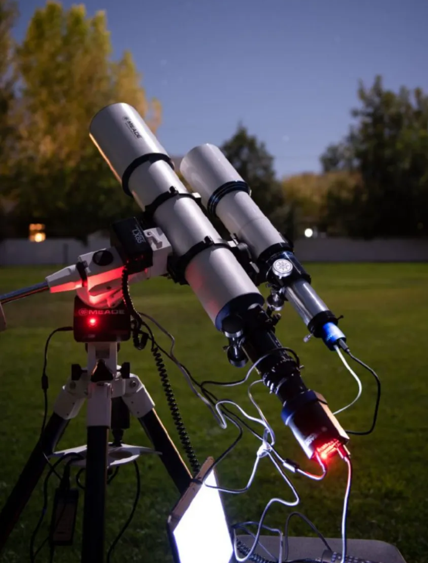

Les minéraux
Je collectionne des minéraux depuis que j'ai 10 ans maintenant. J'adore regarder le reflet de la lumière sur ces petits ou gros caillous brillants, ou même juste chercher la prochaine pierre qui me fera vibrer. C'est une sensation indescriptible.
Depuis que je suis petit, grâce à mon beau-père, j'ai toujours eu l'occasion de pouvoir observer l'espace au travers de son téléscope, ou seulement se poser dans le jardin et regarder les étoiles.
Cela m'a donné envie de comprendre ce qui entourait notre chère planète.
L'astronomie
